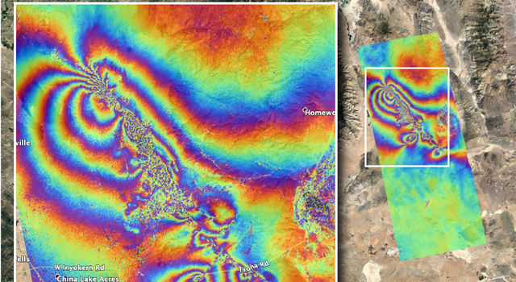

July 9, 2019
NASA Maps Surface Changes From California Quakes
NASA's Advanced Rapid Imaging and Analysis (ARIA) team created this co-seismic Interferometric Synthetic Aperture Radar (InSAR) map, which shows surface displacement caused by the recent major earthquakes in Southern California, including the magnitude 6.4 and the magnitude 7.1 events on July 4 and July 5, 2019, respectively.